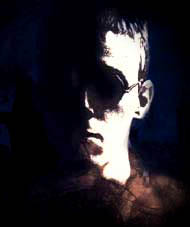

David Bauhaus øeèený Muru
(Tristran Thorn, Artur Dent)

Vizá¾:
Jemné rysy, témìø dívèí nebo elfí tváø bez vousù, tak nìjak si asi ètenáø asi pøedstaví Doriana Garye v roce 2060.
Døíve Murua charakterizovala mimo jiné i záliba v luxusním obleèení podobném tomu ze zaèátku dvacátého století, ale v souèastné dobì, aè nerad, dává pøednost ménì výstøednímu, zato v¹ak ménì nápadnému business standardu. Jediné èím se stále mírnì odli¹uje jsou kulaté brýle, které se pøi prudkém svìtle zabarvují do zrcadel.
vìk: 29 let, d.n.: 25.5.
Kdo je Muru:
Muru je to, co by vzdìlaný èlovìk oznaèil za renesanèní osobnost, nenechává se omezovat ¾ádnými pøedsudky, ¾ádnou církví ani dogmaty, i kdy¾ vìøí, ¾e se z nich dá mnohému nauèit. Jako vìdec je ale systematická a poøádkumilná osobnost a v¾dy ctí ¾ivot. Samozøejmì nevìøí, ¾e v¹ichni tvorové jsou dobøí, ale pova¾uje prostì obì» ¾ivota za pøíli¹ cennou na to, aby jí chtìl plýtvat v ka¾dodením boji.
Vzorem je mu Leonard davinci.
Jak ji¾ bylo zaznamenáno, sahají Muruovy zájmy od kraje ke kraji v nìkolika odvìtvých lidského poznání.
Vystudoval na Oxfordu odbornou biologii. Poté, co zjsitil, ¾e sám má magické nadání, pøestìhoval se do vlasti svého otce a dále pokraèoval ve studiu na Petrohradksé Magické Univerzitì, kde se pokou¹el získat doktorát. Tématem jeho výzkumu byl výskyt magických rostlin v mìstských aglomeracích. V práci v¹ak zatím nemá mo¾nost dále pokraèovat, proto¾e z døíve ¹tìdrého sponzora studia se vyklubala lokální korporace zneu¾ívající výsledky jeho práce.
Vzhledem k tomu, ¾e vìdec moderní doby není schopen existovat bez obrovských databází dat, je¾ ¾ijí svým ¾ivotem v matrix, rozhodl se Muru, ¾e si nechá implanovat datové rozhraní a pár dal¹ích drobných kybernetických vylep¹ení, tak aby byl schopen pøímého propojení s tímto støíbrným svìtem metafor. A od toho momentu se jeho zájmy pøesunuly i do této oblasti. Muru zastává -v souèastné dobì- heretickou my¹lenku, ¾e mentální ikony umìlého svìta matrix mají své reálné obrazy v astrálních metarovinách a bylo by snad do budoucna mo¾né je -alespoò pro pár vyvolených- propojit.
karma:
dobrá: - (21)
volná: IIIII (5)
peníze:
20.000 v trezoru Kanadské národní banky
20.000 na kredithùlce s identitou Arthur Dent
100.000 na kredithùlce s identitou Tristan Thorn
60.000 na kreditní hùlce s identitou David Bauhaus
atributy/astrální atributy:
tìlo: 4
rychlost: 3
síla: 3
charisma: 5
inteligence: 6
vùle: 6
reakce: 4
iniciativa: 4+1k6
esence: 5.0
magie: 5
rezervy kostek:
magické: 6
bojové: 7
dovednosti:
vyvolávání: 6
èarodìjnictví: 6
okouzlování: 6
teorie magie: 6
biologie: 5; parabýlí: 7
angliètina: 3
francoz¹tina: 3
ru¹tina: 3
meè - kata: 2
dovednostní chipy:
poèítaèe: 6
kybertechnologie: 6
elektronika: 6
poèítaèová teorie: 6
auta (k/o): 6
zbranì (k/o): 6
hermetická knihovna:6
kouzla:
spánek: 4(M-omráè.) [(u:2)-1]M; c.vùle; (magie*úspìchy)metrù
ticho: 3 [(u:2)+2]M; c.4; (magie*úspìchy)metrù
ovládni emoce: 3 [(u:2)+2]M; c.vùle; postih: +2 nebo vùle vs. úèinost
stimulace: 3 [(u:2)+1]L; c.4
najdi parabýlí: 5 [(u:2)+1]M; c.4,6,10; (magie*úspìchy)metrù
najdi nebezpeèí: 5 [(u:2)+1]M; c.4,6,10; (magie*úspìchy)metrù
najdi elektrickou rozvodnu: 3 [(u:2)+1]M; c.4,6,10
maskování: 5 [(u:2)]L; c.4; úspìchy=cè.pozorovatele
cyberware:
datajack
chipjack
zobrazovací spojení
výbava:
Cestovní kufr nebo pøisobì:
- 2x sako typu business, 5x bílá ko¹ile, 2x vázanka + kotníkové ko¾ené boty
- Termo-infra-tlumiè oslnìní brýle zrcadlovky
- 2x 3/2 "nátìlník" bílé barvy
- krabièka Gitanes Caporal
- Vikotorinox hodinky s navádìcím signálem
- 4 opasková pouzdra
- Kapesní sekretáøka: fo»ák+fax+telefon+emajl+net+rss+im+gps+gprs+datové spojení do cyberware-linux powered
- Tazer
- Diodová mikrosvítilna
- Magnetický paklíè 4
- Zapalovaè Zippo
- Krátký meè-dlouhý nù¾-®ihadlo (umìlecká úprava): [sil+5]L
- 2x medikit: 3
- 3x tramatický derm
- 4x ti¹ící dern: 6
- 4x protilátkový derm: 6
- 4x stimulaèní derm: 6
- 4x stimulaèní derm: 3
- Ko¾ené obleèní na motorku, pod¹ité kevlarem s chránièi kloubù a kevlarovými rukavicemi speciálních jednotek s boxerem + kanady (5/5)
- 2x 5/3 celotìlové "spodní prádlo"
- Dalekohled - optický: 2
- Fotoaparát - dalekohled 2 - digitálnlní
- Notebook - 1000mp vyjimatelná pamì», na cipy, disky, wifi, ethernet, bluetooth 2600
V notebooku:
- hermetická knihovna:6
- nahraný prùbìh runu v zairu - bazili¹ci, sovoci a èerní orèí uctívaèi divoèáka
- podrobný rozbor látky zpùsobující astrální zostøení
- nahraný kompletní prùbìh akce petrohrad blackout
- nahraná pitva "zombie" i s podrobným komentáøem
- nahraná pitva "vetøelce-je¹tìrky" i s podrobným komentáøem
- nahrané tsunami v Seattle
- herbáø
- policejní informace: 3 + mapy metra a kanalizace v Peterburgu
Kovový kufr pota¾ený kù¾í
- okouzlovací souprava
- bílá tekutina spùsobující zesílení astrálních pro¾itkù
- 1x semeno høbitovníku (para-bøeè»an)
- materiály pro sídlo medicíny: 6
V Kanadì v pronajatém domì - 20 mil ji¾nì od mìsta Garmond, na jméno David Bauhaus:
- 70l batoh
- nù¾ na pøe¾ití
- zavazadlo na pøe¾ití
- spacák
- 5l vak na h2o
- hamaka
- celta
- lekárnièka: 3
- maskovací barvy
- dalekohled: 2 (opt.)
- kanady
- britské maskáèové kalhoty
- ko¹ile
- vojenský klobouk
- záloha dat z notebooku a èipù
- + Antonovo vybavení
V Kanadì v Bance - Mìsto Garmond, na jméno David Bauhaus
viz. osud Antonova vybavení
¾ivotní úroveò
nízká - 1 rok - opu¹tìný dùm v Kanadì u mìsta Garmond
vysoká - 1 rok - bezpeènostní schránka v Kanadské Národní Bance v Garmondu
kontakty:
eva tarkovská - elfka - prodavaèka talismanù, doktorka archeologie pùsobící na petrohradksé univerzitì
josif goldstein - trpaslík, ruský ¾id - schopný za patøièný obnos vyrobit fale¹né doklady
michail antonoviè gorodìvský - ork (kouzelník) - radní na petrohradské radnici
cpt pearce - èlovìk - velitel speciální jednotky petrohrad
drtiè - troll - shadowrunner, s plamenometem
sehnat
fuchi-cyber:4 [omp: 6, odl: 3, ram: 100, hdd: 5000, vklládání: 20, i/o: 20 ]
- lid: 4, únik: 4, maskování: 4, sensory: 6, de¹ifrovací program: 6